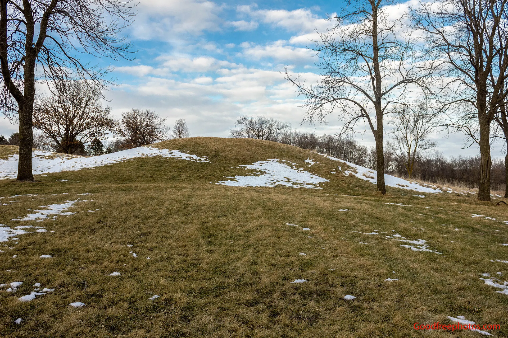

Our Vision
A Future Where the Past
Is Never Forgotten
We envision Aztalan State Park as a world-class destination for archaeological education, cultural tourism, and Indigenous heritage — a place where visitors of all ages encounter the full depth of human achievement in ancient Wisconsin.
Our vision extends beyond the park's borders. We believe that engaging people with authentic archaeological sites builds empathy, broadens perspectives, and fosters civic pride in Wisconsin's extraordinary natural and cultural patrimony.
By funding programs, capital improvements, and research that the state park system alone cannot provide, we bridge the gap between what Aztalan is today and what it has the potential to become for future generations.
